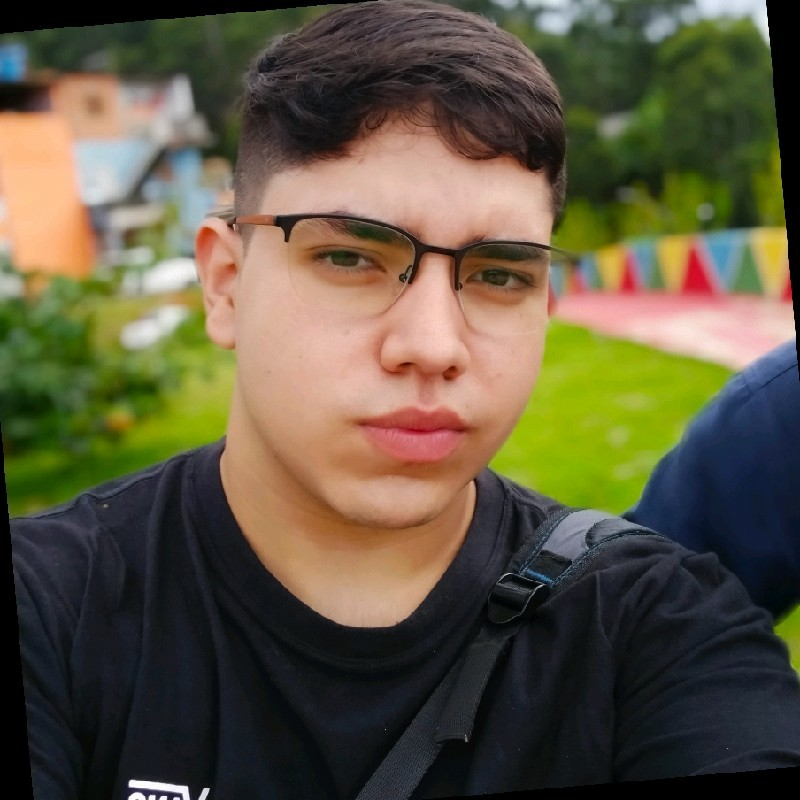

Boas-Vindas!
O objetivo desse site é documentar a minha experiência nessa jornada chamada 42Basecamp, e com isso, motivar quem deseja aceitar esse desafio, a se inscrever e arrumar as malas para esse acampamento! Não se preocupe, não darei spoilers de eventos ou coisas que prejudique você a tirar as próprias conclusões. Pense nisso como a interpretação de alguém sobre um livro, no final, somente a sua leitura pode definir sua opinião.
Quem sou eu

Meu nome é Gustavo Iafelix, sou graduando em Ciência da Computação e sou fascinado por programação. Essa é a 2º vez que participo do 42Basecamp, e posso afirmar com total certeza de que é uma jornada que vale cada minuto. Espero que me acompanhar te faça querer chegar mais longe, no caso de já estar participando, ou, participar caso tenha encontrado essa documentação por acaso.